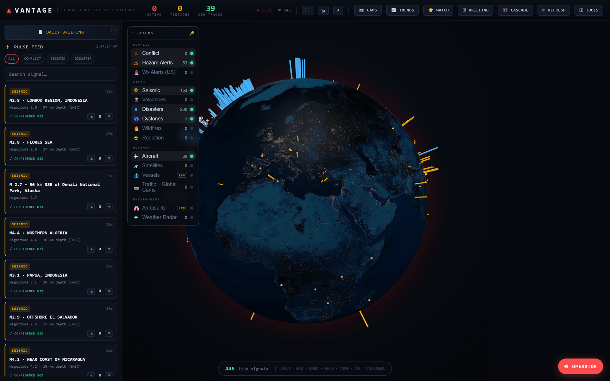

EVERY FEED, FUSED
CONFLICT — GDELT
SEISMIC — USGS
AIRCRAFT — ADSB.LOL
VESSEL — AISSTREAM
WILDFIRE — EONET · FIRMS
WEATHER — RAINVIEWER
07 · DESKTOP
One globe. Every feed. No API keys.
A live common operating picture for conflict and risk, fused from free, mostly key-less sources — and read by a model that runs on your own machine.

Real session, nothing staged: 463 live signals — 153 seismic, 200 disaster, 109 aircraft tracks. Layers reading zero were rate-limited upstream at capture time, which is exactly the degradation described below.
An Ollama model reads every active layer and writes the assessment on your machine. Nothing leaves it — no cloud, no per-token bill.
Download, run, data flows. The core layers need no API key at all; two optional free keys add global thermal and live vessels.
It is a situational picture, not an intelligence-grade product. The analyst is a local model reading open feeds, and it is only ever as good as they are.
It is not predictive. Projections are statistical, carry stated uncertainty, and get graded against what actually happened.
It degrades when an upstream feed goes down. Vantage shows you the gap; it can't fill it.
The installer isn't code-signed yet. Windows SmartScreen will warn about an unknown publisher — verify the hash below, or click More info then Run anyway.
# PowerShell — check the installer against the published hash Get-FileHash .\Vantage.Setup.0.1.0.exe -Algorithm SHA256 # expected: 12696619c59870682ecf95e8fd319140af5c1400705ae19d71914304ce488dac # unsigned build: clear the Mark-of-the-Web first, or the installer can be silently blocked Unblock-File .\Vantage.Setup.0.1.0.exe .\Vantage.Setup.0.1.0.exe
SHA256SUMS.txt is published alongside every release.